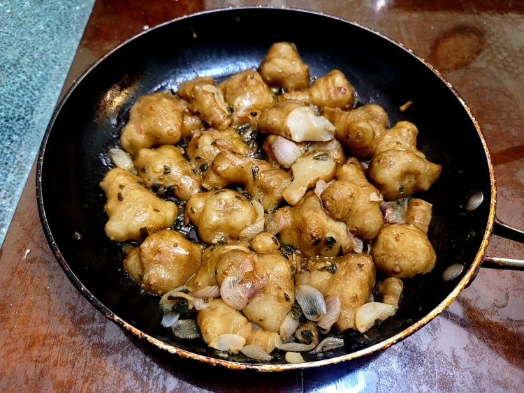

Braised Sunchokes

Ingredients:
- 1 - 1/2 lb Sunchokes, cut in half lengthwise
- 2 - 3 tbsp Sunflower oil
- 1/4 Wild onions or Shallots, chopped
- 2 tsp Sage, chopped
- 1/8 tsp Smoked salt
- 1/4 cup Corn stock, Vegetable stock or Water
- Optional: 1/4 cup Roasted sunflower seeds
- Optional: Wojape
Instructions:
- Heat the oil in a large pan over medium heat. Add in the onion, sage, and salt and sauté until the onions become translucent.
- Add in the sunchokes, flat-side down and sauté for about 5 minutes.
- Add in the stock or water and reduce the heat to low. Cover and let cook for 40 minutes.
- Serve warm and garnish with sunflower seeds and/or a drizzle of wojape.